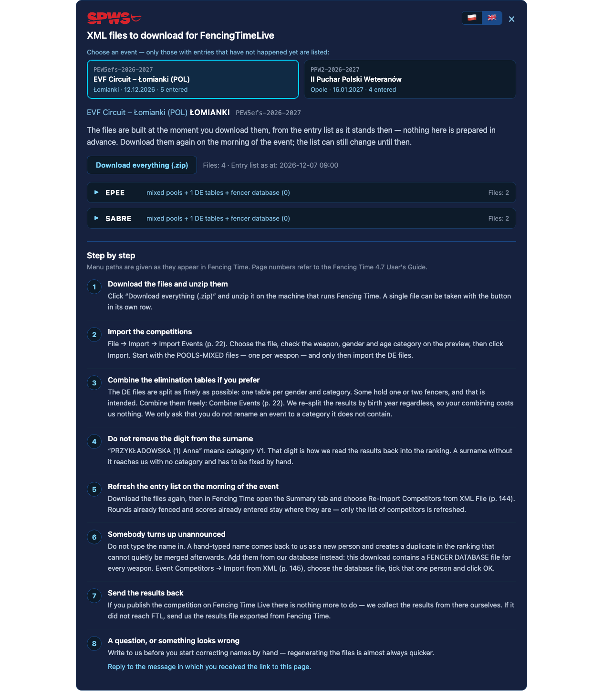
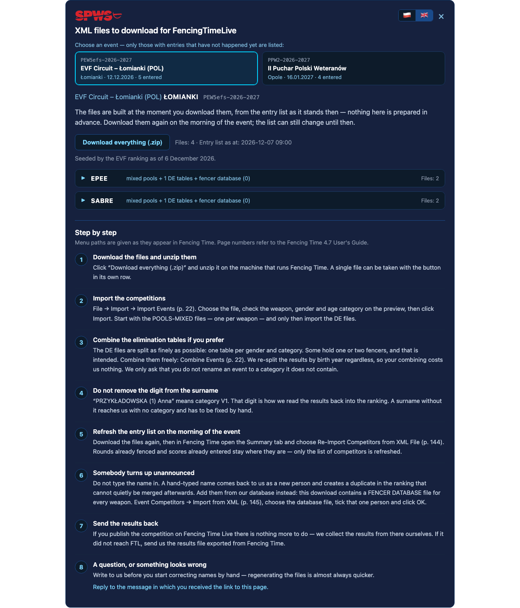
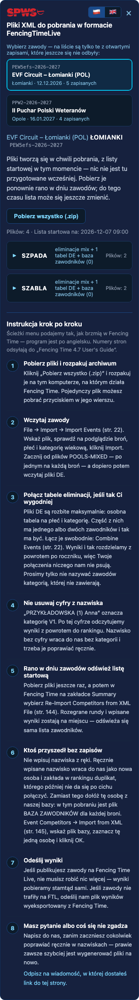
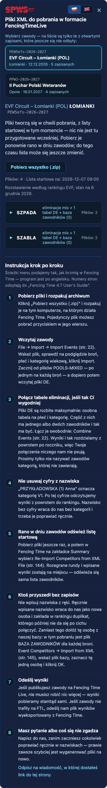
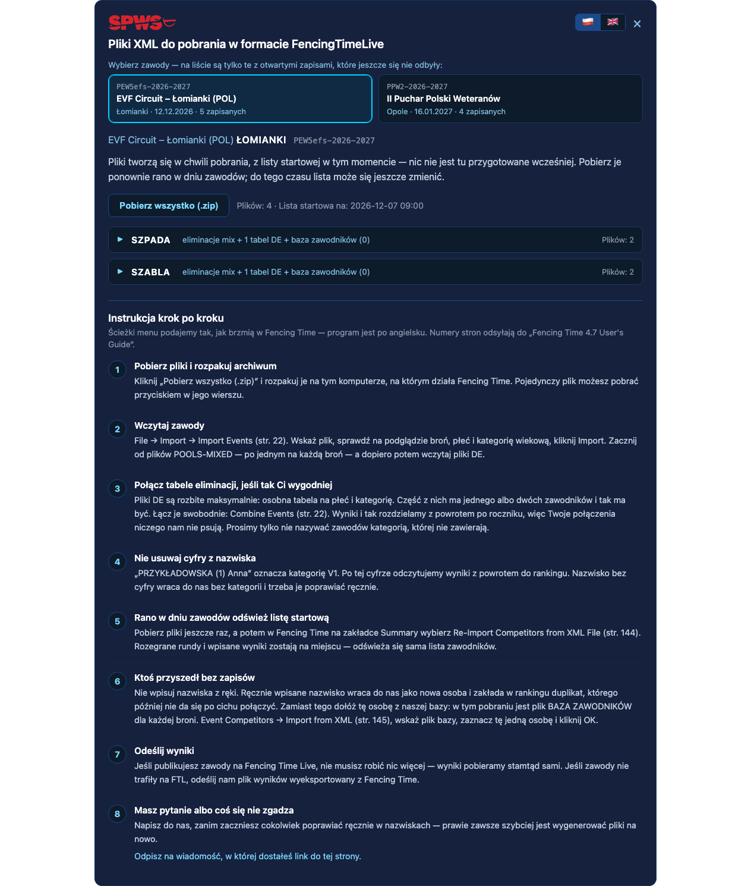
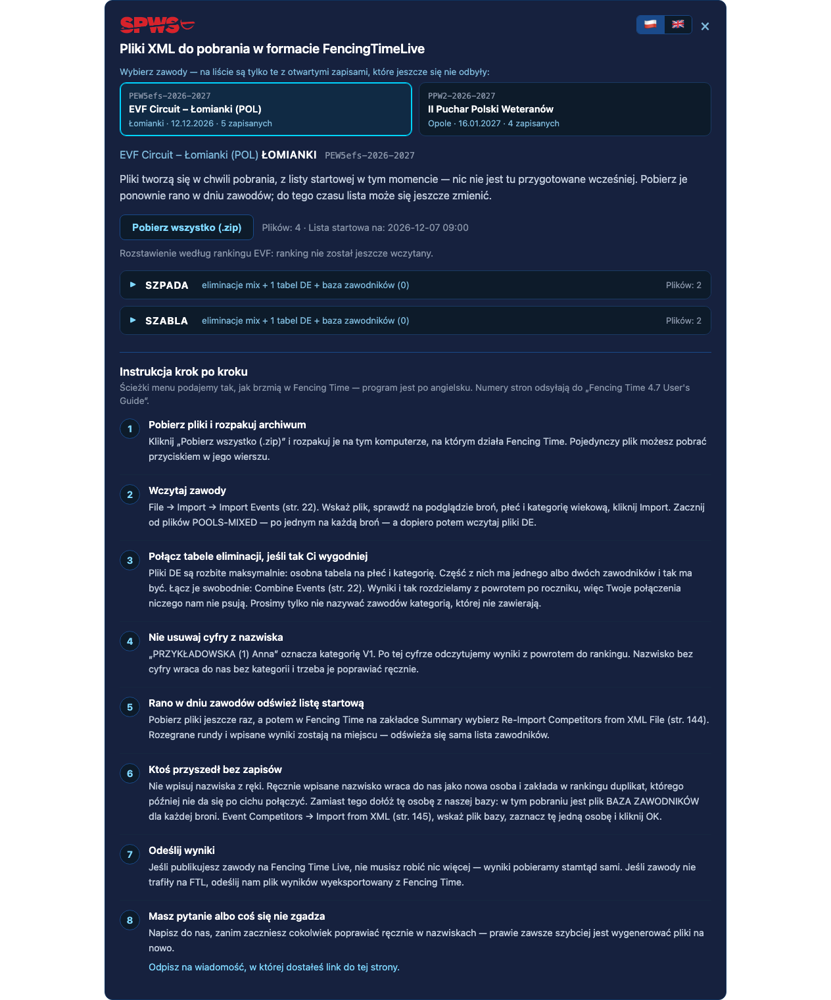
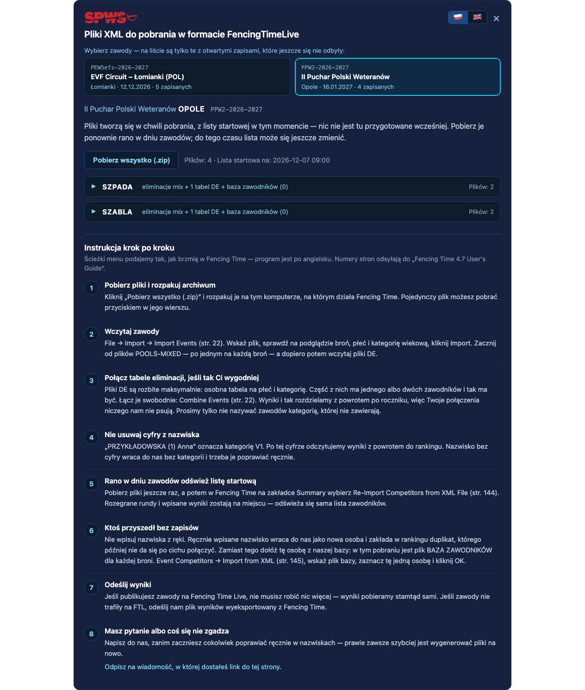

FR-174 · Release 1 · Picture sheet
The download page names the EVF ranking
The only visible change of release 1: on the download page of an event EVF organises, one line under „Pobierz wszystko” says which ranking the files are seeded by and when it was read. An event of ours is pixel-identical to main in all four views. Your approval in chat is needed before any push.
01 · How it was made
Two builds, one fixture, software drawing
- Two custom-element builds: main (
origin/mainb2e38947) and this branch. Each is served to Playwright throughroute(); the download page is mounted as<spws-ftl-export>; every data request is answered from the fixture inseed-source-line-sheet/tools/ftl.cjs(invented people), every other host is blocked. - Software drawing with fixed settings. Main was captured twice first: 12 of 12 identical, so the capture itself does not move.
- Compared with
pixdiff.cjs(in place) andseed-source-line-sheet/tools/rowdiff.cjs(each row below the new line against the after-row shifted by the line's height). Raw results:seed-source-line-sheet/pixdiff.json,seed-source-line-sheet/rowdiff.jsonl. - The line has a whole-pixel height (20 px) so everything below it moves by whole pixels; a first capture with the inherited fractional height left the text below on sub-pixel positions, and was corrected before this sheet.
02 · Every view
Result per state, width and language
| State | Width | Lang | Result |
|---|---|---|---|
| An event of ours (SPWS ranking) | desktop | EN | identical (0 pixels differ) |
| An event of ours (SPWS ranking) | desktop | PL | identical (0 pixels differ) |
| An event of ours (SPWS ranking) | phone | EN | identical (0 pixels differ) |
| An event of ours (SPWS ranking) | phone | PL | identical (0 pixels differ) |
| EVF event, ranking read on 6 Dec 2026 | desktop | EN | one new line, page 30 px taller; above it identical; below it identical shifted by 30 px except 39 anti-aliased pixels on rounded corners |
| EVF event, ranking read on 6 Dec 2026 | desktop | PL | one new line, page 30 px taller; above it identical; below it identical shifted by 30 px except 80 anti-aliased pixels on rounded corners |
| EVF event, ranking read on 6 Dec 2026 | phone | EN | one new line, page 50 px taller; above it identical; below it identical shifted by 50 px except 80 anti-aliased pixels on rounded corners |
| EVF event, ranking read on 6 Dec 2026 | phone | PL | one new line, page 50 px taller; above it identical; below it identical shifted by 50 px except 42 anti-aliased pixels on rounded corners |
| EVF event, ranking not read yet | desktop | EN | one new line, page 30 px taller; above it identical; below it identical shifted by 30 px except 39 anti-aliased pixels on rounded corners |
| EVF event, ranking not read yet | desktop | PL | one new line, page 30 px taller; above it identical; below it identical shifted by 30 px except 80 anti-aliased pixels on rounded corners |
| EVF event, ranking not read yet | phone | EN | one new line, page 50 px taller; above it identical; below it identical shifted by 50 px except 80 anti-aliased pixels on rounded corners |
| EVF event, ranking not read yet | phone | PL | one new line, page 50 px taller; above it identical; below it identical shifted by 50 px except 42 anti-aliased pixels on rounded corners |
The few differing pixels below the line sit only on the curved edges of the weapon boxes, the step-number circles and the card's bottom corners: the same shapes drawn one line lower round off a handful of edge pixels differently. No text, no colour and no layout differs.
03 · The new line
Before and after
2-evf-read__desktop__pl.png
2-evf-read__desktop__en.png

2-evf-read__phone__pl.png

3-evf-none__desktop__pl.png

1-ours__desktop__pl.png

picture sheet · FR-174 release 1 · 22 Nov 2026 · plan doc/plans/seeding-by-organiser-ranking-2026-11-22.html · captures in doc/plans/seed-source-line-sheet/